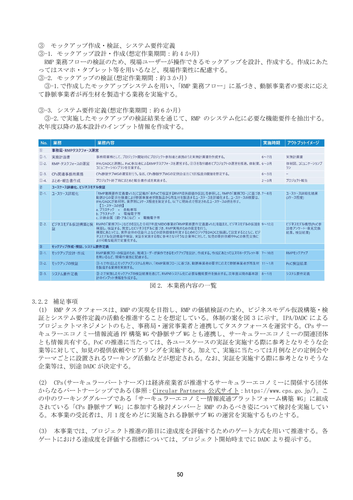

IPAのPoC（概念実証）仕様から読む、仮説・試作・判断の順序

出典：IPA「RMPの提供価値仮説の検証（PoC）業務 入札説明書」52ページ（2026年4月1日公表、2026年10月6日確認）。
このIPA資料は、生成AIの活用方法を説明したものではありません。一方、新規事業のPoCで混同しやすい工程を具体的に分けています。提供価値の仮説を詳細化し、ビジネスモデルを検証し、現場ユーザーが操作できるモックアップで業務フローを確かめ、その結果から要件を抽出する順序です。TechWorkerでは、この順序のうち下書きや試作に生成AIを使い、証拠の取得と投資判断は人が担う設計を推奨します。
生成AIの出力を「仮説」として管理する
生成AIは、市場の変化、顧客課題、解決案、競合、収益モデルの候補を短時間で並べられます。しかし、もっともらしい文章は需要の証拠になりません。社内資料を読ませた場合も、過去の議事録に書かれた意見と、実際に売れた理由を分けます。
| AIに作らせるもの | 位置付け | 次に必要な証拠 |
|---|---|---|
| 顧客課題の候補 | 未検証の仮説 | 実在顧客の行動、頻度、現在の代替手段 |
| 価格案 | 質問に使う範囲 | 提示価格への反応、試用、支払い意思 |
| 競合比較 | 調査項目の一覧 | 公式情報、実際の利用、顧客の選択理由 |
| 事業計画 | 計算構造の下書き | 単価、獲得費、原価、継続率の実測 |
仮説には作成日、根拠、反証条件を付けます。後から都合の良い説明へ書き換えず、何が外れたかを残すと、次の案で同じ思い込みを繰り返しにくくなります。
合成回答は論点整理に使い、顧客の証拠へ置き換える
生成AIに想定顧客の条件を与え、複数の人物として反応を出させる方法は、質問漏れを見つけたり、案を比較したりする補助には使えます。合成された回答は、「何人が買う」「この価格が受容される」という実績として扱えません。
TechWorkerの設計例：合成回答で出た論点を、実在顧客への質問、プロトタイプの操作観察、価格提示の三つに変換します。結果が合成回答と違った場合は、実在顧客の証拠を優先します。
インタビューで「欲しい」と言われても、すぐ需要が証明されたとは扱いません。現在どのように問題を解いているか、誰が予算を持つか、次の行動として試用や社内紹介へ進むかを確認します。
PoCは、合否指標を決めてから最小限を作る
PoCは、次の投資判断に必要な不確実性を減らす検証です。着手前に「何が分かれば進むか」「どの結果なら止めるか」を決めます。完成品に近い試作品ができても、判断に必要な条件を測っていなければ検証を終えられません。
| 仮説 | 観測方法 | 合否指標の例 |
|---|---|---|
| 担当者が業務で使える | 実際の業務に沿った操作観察 | 完了率、詰まった工程、補助の回数 |
| 企業が費用を払う | 価格を示した商談、試験契約 | 決裁者の反応、次の約束、契約条件 |
| 技術的に成立する | 最小構成で代表ケースを実行 | 成功条件、失敗条件、処理時間、費用 |
生成AIは画面案、会話フロー、質問票、結果整理の下書きに使えます。作る速度が上がるほど、検証と関係のない機能も足しやすくなります。各機能がどの指標を測るために必要かを説明できなければ、PoCから外します。
投資判断へ渡すのは、完成度ではなく証拠と未解決点
PoC報告には、当初の仮説、対象、実施方法、結果、合否、予想外の事実、未解決のリスクを残します。AIがまとめた示唆は、生データや記録へ戻って確認します。悪い結果を「学びがあった」とだけ書き換えると、次の投資判断に使えません。
本番移行の判断には、利用データとその権利、運用責任者、監視・誤り修正・停止の手順、継続費用も添えます。試作品が動いていても、実データを使える条件や運用責任者が未確定なら移行を保留します。
期間短縮や費用削減も、AIを使った工程だけでなく、修正、顧客調整、確認を含む全体で測ります。未実施の設計を成果として書かず、試した範囲と次に検証する範囲を分けます。これが、探索からPoC、定着までを一つの成功物語にせず、各ゲートで止める判断を可能にします。
よくある質問
できません。生成AIや合成ペルソナの回答は仮説と質問案に使い、需要は実在する顧客の行動、支払い意向、試用、契約などで確認します。
次の投資判断で確かめたい仮説、観測方法、合否指標、やめる条件を先に決めます。その後で、指標を測るために必要な最小限のモックアップを作ります。
画面案、会話フロー、質問票、結果整理の下書きは短くできる可能性があります。ただし全体の期間短縮は、確認・修正・顧客検証まで含めて実測します。速さを事前には保証しません。